(Describe the steps in data cleaning)
tidy_df =
read.csv(
"data/significant-volcanic-eruption-database.csv", sep = ";", na.strings=c("", NA)) |>
janitor::clean_names() |>
dplyr::select(
-c(month, day, location, status, volcano_missing, volcano_missing_description, earthquakes_houses_damaged_description),
-starts_with("total")
) |>
mutate( # change flags to boolean
flag_tsunami = case_match(flag_tsunami, "Tsunami"~ TRUE, NA ~ FALSE),
flag_earthquake = case_match(flag_earthquake, "Earthquake"~ TRUE, NA ~ FALSE)
) |>
separate(coordinates, into = c("lat", "long"), sep = ",") |>
mutate(
lat = as.numeric(lat), long = as.numeric(long)
) |>
mutate_at(vars(ends_with('description')), ~ifelse(is.na(.), "None/No Record", .)) |>
mutate( # shorten description
volcano_deaths_description = case_match(
volcano_deaths_description,
"Very Many (~1001 or more deaths)" ~ "Very Many (~1001 or more)",
"Many (~101 to 1000 deaths)" ~ "Many (~101 to 1000)",
"Some (~51 to 100 deaths)" ~ "Some (~51 to 100)",
"Few (~1 to 50 deaths)" ~ "Few (~1 to 50)",
"None/No Record" ~ "None/No Record"
),
volcano_injuries_description = case_match(
volcano_injuries_description,
"Very Many (~1001 or more deaths)" ~ "Very Many (~1001 or more)",
"Many (~101 to 1000 deaths)" ~ "Many (~101 to 1000)",
"Some (~51 to 100 deaths)" ~ "Some (~51 to 100)",
"Few (~1 to 50 deaths)" ~ "Few (~1 to 50)",
"None/No Record" ~ "None/No Record"
),
volcano_damage_description = case_match(
volcano_damage_description,
"EXTREME (~$25 million or more)" ~ "EXTREME (~>=$25 million)",
"SEVERE (~>$5 to $24 million)" ~ "SEVERE (~$5 to $24 million)",
"MODERATE (~$1 to $5 million)" ~ "MODERATE (~$1 to $5 million)",
"LIMITED (roughly corresponding to less than $1 million)" ~ "LIMITED (~<$1 million)",
"None/No Record" ~ "None/No Record"
),
volcano_houses_destroyed_description = case_match(
volcano_houses_destroyed_description,
"Very Many (~1001 or more houses)" ~ "Very Many (~1001 or more)",
"Many (~101 to 1000 houses)" ~ "Many (~101 to 1000)",
"Some (~51 to 100 houses)" ~ "Some (~51 to 100)",
"Few (~1 to 50 houses)" ~ "Few (~1 to 50)",
"None/No Record" ~ "None/No Record"
)
) |>
mutate( # change descriptions to factors w/ levels
volcano_deaths_description = factor(volcano_deaths_description, levels = c("Very Many (~1001 or more)", "Many (~101 to 1000)", "Some (~51 to 100)", "Few (~1 to 50)", "None/No Record")),
volcano_injuries_description = factor(volcano_injuries_description, levels = c("Very Many (~1001 or more)", "Many (~101 to 1000)", "Some (~51 to 100)", "Few (~1 to 50)", "None/No Record")),
volcano_damage_description = factor(volcano_damage_description, levels = c("EXTREME (~>=$25 million)", "SEVERE (~$5 to $24 million)", "MODERATE (~$1 to $5 million)", "LIMITED (~<$1 million)", "None/No Record")),
volcano_houses_destroyed_description = factor(volcano_houses_destroyed_description, levels = c("Very Many (~1001 or more)", "Many (~101 to 1000)", "Some (~51 to 100)", "Few (~1 to 50)", "None/No Record"))
)
write.csv(tidy_df, "data/volcanic-eruption-final.csv", row.names=FALSE)The final dataset used in the analysis has the following key variables:
year: the year of eruptionflag_tsunami: specifies whether there is a tsunami
accompanying the volcanic eruption (1: with tsunami, 0: no tsunami)flag_earthquake: specifies whether there is an
earthquake accompanying the volcanic eruption (1: with earthquake, 0: no
earthquake)volcano_name: the name of the volcanocountry: the country where the volcano is locatedelevation: the elevation of the volcanovolcano_type: the type of the volcanovolcanic_explosivity_index: volcanic explosivity index
of the eruptionvolcano_deaths: deaths caused directly by volcanic
eruptionvolcano_deaths_description: description of deaths
caused directly by volcanic eruptionvolcano_injuries: injuries caused directly by volcanic
eruptionvolcano_injuries_description: description of injuries
caused directly by volcanic eruptionvolcano_damage_in_m: damage (in million dollars) caused
directly by volcanic eruptionvolcano_damage_description: description of damage (in
million dollars) caused directly by volcanic eruptionvolcano_houses_destroyed: houses destroyed directly by
volcanic eruptionvolcano_houses_destroyed_description: description of
houses destroyed directly by volcanic eruptionlat: latitudelong: longitudeFirst, we want to figure out which countries or regions are most prone to volcanic eruptions, so we make an interactive map to display the geographical distribution of volcanoes.
geo_df =
tidy_df |>
select(volcano_name, country, volcano_type, elevation, lat, long) |>
group_by(volcano_name, country, volcano_type, elevation, lat, long) |>
summarise(eruption_count = n())
geo_df |>
filter(eruption_count >= 2) |>
leaflet() |>
addTiles() |>
addProviderTiles(providers$CartoDB.Positron) |>
addMarkers(lat = ~lat,
lng = ~long,
clusterOptions = markerClusterOptions(),
label = ~paste(
"Name: ", volcano_name, "<br>",
"Country: ", country, "<br>",
"Volcano Type: ", volcano_type, "<br>",
"Elevation: ", elevation, "<br>",
"Eruption Count: ", eruption_count) |> lapply(htmltools::HTML)) We can notice that most volcanoes are located at the edge of the continents. This pattern is a result of the tectonic plate boundaries where volcanic activity is often concentrated.
country1 =
geo_df |>
group_by(country)|>
summarise(n = n()) |>
arrange(desc(n)) |>
head(5) |>
ggplot(aes(x = reorder(country, -n), y = n, fill = country)) +
geom_bar(stat = "identity", width = 0.6) +
labs(title = "Top Five Countries with the Most Volcanoes",
x = "Country",
y = "Number of Volcanoes")
country2 =
geo_df |>
group_by(country)|>
summarise(n = sum(eruption_count)) |>
arrange(desc(n)) |>
head(5) |>
ggplot(aes(x = reorder(country, -n), y = n, fill = country)) +
geom_bar(stat = "identity", width = 0.6) +
labs(title = "Top Five Countries with the Most Volcanic Eruptions",
x = "Country",
y = "Number of Eruptions")
plot_grid(country1, country2, ncol = 1)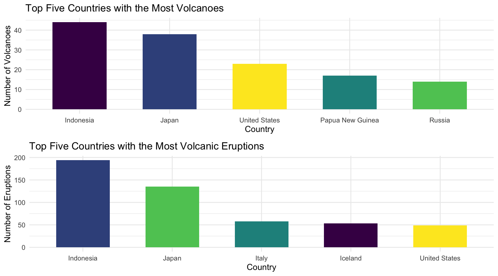
The top five countries with the most volcanoes are: Indonesia, Japan,
United States, Papua New Guinea and Russia.
The top five countries with the most volcanic eruptions are: Indonesia,
Japan, Italy, Iceland and United States.
# Tidy data for plotting
voc_year <- tidy_df%>%
group_by(year,volcanic_explosivity_index)%>%
summarise(count = n())
voc_year$period <- ifelse(voc_year$year < 0, "Before Christ",
ifelse(voc_year$year <= 1000, "0-1000",
ifelse(voc_year$year <= 1500, "1000-1500",
ifelse(voc_year$year <= 1899, "1500-1900",
ifelse(tidy_df$year <= 1999, "20th century", "21st century")))))
# Change the variable type to factor
voc_year$period <- factor(voc_year$period, levels = c("Before Christ", "0-1000", "1000-1500", "1500-1900", "20th century","21st century"))expo <- voc_year |>
select(period,volcanic_explosivity_index) |>
group_by(period,volcanic_explosivity_index) |>
summarise(count = n())
# Plotting
ggplot(expo,aes(x = period, y = count,fill = volcanic_explosivity_index)) +
geom_bar(stat="identity", position="stack") +
labs(
x = "Period",
y = "Count",
title = "Volcanic Explosivity Index Count Over Periods"
)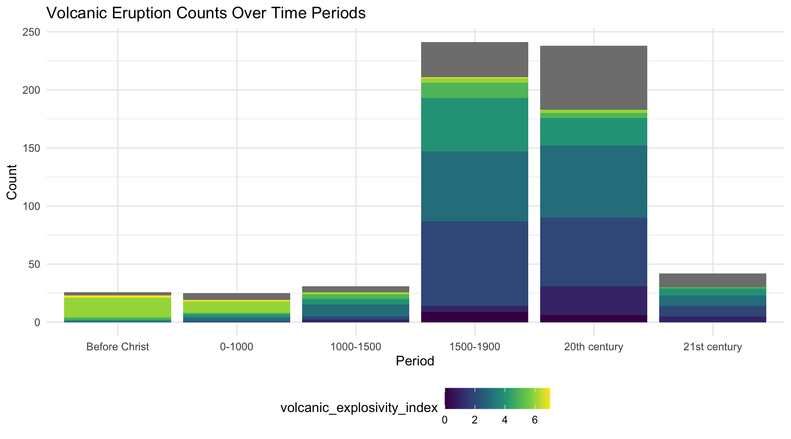 The graph shows the number of deaths and injuries caused by volcanic eruptions over time. The year from 1500 to 1900 saw the most volcanic eruptions, with a total of around 250. We can also find that most of the eruptions’ volcanic index range from 1 to 5 while only a small proportion of eruptions’ volcanic index are around 0. The number of eruptions in the 20th century is approximately equal to the total number of eruptions from 1500 to 1900. Most eruptions’ volcanic index range from 2 to 5. Eruptions with grey degree consists of 25% of the total number of eruptions in the 20th century. The total number of eruptions of the rest four time periods are nearly equal. For eruptions taking place before Christ or from 0 to 1000 B.C., eruption with the volcanic index of 6 is the main type of eruption. For the 21st century, however, eruptions of each type have taken place at an almost equal chance.
time_df <- tidy_df |>
filter(year > 1900) |>
mutate(
volcano_deaths = replace(volcano_deaths, is.na(volcano_deaths), 0),
volcano_injuries = replace(volcano_injuries, is.na(volcano_injuries), 0),
volcano_damage_in_m = replace(volcano_damage_in_m, is.na(volcano_damage_in_m), 0),
volcano_houses_destroyed = replace(volcano_houses_destroyed, is.na(volcano_houses_destroyed), 0),
year = as.character(year)
) |>
group_by(year) |>
summarize(
total_deaths = sum(volcano_deaths,na.rm = TRUE),
total_injuries = sum(volcano_injuries,na.rm = TRUE),
total_damage = sum(volcano_damage_in_m,na.rm = TRUE),
total_house_destruction = sum(volcano_houses_destroyed,na.rm = TRUE)
)
ggplot(time_df, aes(x = as.numeric(year))) +
geom_line(aes(y = total_deaths, color = "Deaths"), size = 1) +
geom_line(aes(y = total_injuries, color = "Injuries"), size = 1) +
labs(
title = "Analysis of Toal Deaths and Total Injuries Over Time",
x = "Year",
y = "Count",
color = "Variable"
)As for the number of deaths, it has reached its climax at over 30000 around 1900. Then as the time goes, the number of deaths fluctuated between 0 and 5000 until around 1985, when the number of deaths reached another peak at about 25000. After that the number of deaths has dropped and continued to fluctuate between 0 and 1500.
When it comes to the number of injuries, however, the number does not fluctuate as drastically as the number of death. It has remained stable from 1900 to around1985.After hitting its pick at 10000 in around 1985, the number went down and continued to remain stable.
ggplot(time_df, aes(x = as.numeric(year))) +
geom_line(aes(y = total_damage, color = "Damage"), size = 1) +
geom_line(aes(y = total_house_destruction, color = "Houses Destroyed"), size = 1)+
labs(
title = "Analysis of Damage and Houses Destroyed Over Time",
x = "Year",
y = "Count",
color = "Variable"
) As for the number of houses destroyed, the most significant increase in damage and houses destroyed occurred between 1900 and 1925. The number then remained stable and fluctuated slightly until the 2020s, when the number of houses destroyed drastically fluctuated ranging from 0 to 3300.
In light of the number of damage, it remained stable over time and slightly fluctuated around 1975 and the 2010s respectively.
In this section, we aim to explore the impact of various factors(the occurrence of tsunami and earthquake, the type of volcano, the volcanic explosivity index and elevation) on casualties and property losses resulting from volcanic eruptions.
numeric_df =
tidy_df |>
select(year,flag_tsunami,flag_earthquake, elevation,
volcano_type, volcanic_explosivity_index,
volcano_injuries, volcano_deaths, volcano_damage_in_m, volcano_houses_destroyed) |>
mutate(
flag_tsunami = factor(flag_tsunami),
flag_earthquake = factor(flag_earthquake),
volcanic_explosivity_index = factor(volcanic_explosivity_index))par(mfrow = c(2,2))
# volcano_injuries vs flag_tsunami
tsunami_injuries =
numeric_df |>
filter(!is.na(volcano_injuries)) |>
ggplot(aes(x = flag_tsunami, y = log(volcano_injuries), group = flag_tsunami, fill = flag_tsunami)) +
geom_boxplot() +
labs(title = "Injuries vs Tsunami", x = "Tsunami Occurrence", y = "ln_Injuries")
# volcano_deaths vs flag_tsunami
tsunami_deaths =
numeric_df |>
filter(!is.na(volcano_deaths)) |>
ggplot(aes(x = flag_tsunami, y = log(volcano_deaths), group = flag_tsunami, fill = flag_tsunami)) +
geom_boxplot() +
labs(title = "Deaths vs Tsunami", x = "Tsunami Occurrence", y = "ln_Deaths")
# damage vs flag_tsunami
tsunami_damage =
numeric_df |>
filter(!is.na(volcano_damage_in_m)) |>
ggplot(aes(x = flag_tsunami, y = log(volcano_damage_in_m), group = flag_tsunami, fill = flag_tsunami)) +
geom_boxplot() +
labs(title = "Damage vs Tsunami", x = "Tsunami Occurrence", y = "ln_Damage(money in million)")
# volcano_houses_destroyed vs flag_tsunami
tsunami_houses_destroyed =
numeric_df |>
filter(!is.na(volcano_houses_destroyed)) |>
ggplot(aes(x = flag_tsunami, y = log(volcano_houses_destroyed), group = flag_tsunami, fill = flag_tsunami)) +
geom_boxplot() +
labs(title = "Houses Destroyed vs Tsunami", x = "Tsunami Occurrence", y = "ln_Houses Destroyed")
grid.arrange(tsunami_injuries, tsunami_deaths, tsunami_damage, tsunami_houses_destroyed, ncol = 2)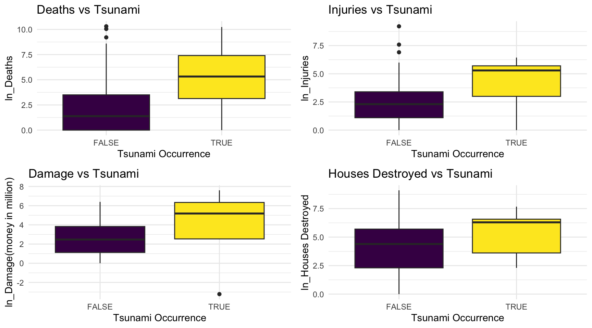
The box plots above indicate a noticeable influence of tsunami occurrence on the volcanic losses. The tsunami effects triggered by volcanic activities are likely to contribute to an increase in both casualties and property damage.
par(mfrow = c(2,2))
# volcano_injuries vs flag_earthquake
earthquake_injuries =
numeric_df |>
filter(!is.na(volcano_injuries)) |>
ggplot(aes(x = flag_earthquake, y = log(volcano_injuries), group = flag_earthquake, fill = flag_earthquake)) +
geom_boxplot() +
labs(title = "Injuries vs Earthquake", x = "Earthquake Occurrence", y = "ln_Injuries")
#volcano_deaths vs flag_earthquake
earthquake_deaths =
numeric_df |>
filter(!is.na(volcano_deaths)) |>
ggplot(aes(x = flag_earthquake, y = log(volcano_deaths), group = flag_earthquake, fill = flag_earthquake)) +
geom_boxplot() +
labs(title = "Deaths vs Earthquake", x = "Earthquake Occurrence", y = "ln_Deaths")
#damage vs flag_earthquake
earthquake_damage =
numeric_df |>
filter(!is.na(volcano_damage_in_m)) |>
ggplot(aes(x = flag_earthquake, y = log(volcano_damage_in_m), group = flag_earthquake, fill = flag_earthquake)) +
geom_boxplot() +
labs(title = "Damage vs Earthquake", x = "Earthquake Occurrence", y = "ln_Damage(money in million)")
#volcano_houses_destroyed vs flag_earthquake
earthquake_houses_destroyed =
numeric_df |>
filter(!is.na(volcano_houses_destroyed)) |>
ggplot(aes(x = flag_earthquake, y = log(volcano_houses_destroyed), group = flag_earthquake,fill = flag_earthquake)) +
geom_boxplot() +
labs(title = "Houses Destroyed vs Earthquake", x = "Earthquake Occurrence", y = "ln_Houses Destroyed")
grid.arrange(earthquake_injuries, earthquake_deaths, earthquake_damage, earthquake_houses_destroyed, ncol = 2)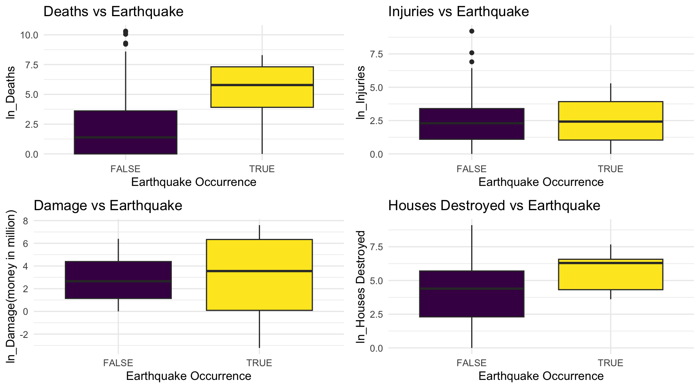
The above box plots indicate that when volcanic eruptions trigger volcanic earthquakes, there is a generally noticeable increase in casualties and property damage compared to situations where volcanic earthquakes are not triggered.
par(mfrow = c(2,2))
# volcano_injuries vs volcano_type
type_injuries =
numeric_df |>
filter(!is.na(volcano_injuries)) |>
ggplot(aes(x = reorder(volcano_type, volcano_injuries, median), y = log(volcano_injuries), group = volcano_type, fill = volcano_type)) +
geom_boxplot() +
labs(title = "Injuries vs Volcano Type", x = "Volcano Type", y = "ln_Injuries") +
theme(axis.text.x = element_text(angle = 45, hjust = 1), legend.position = "none")
# volcano_deaths vs volcano_type
type_deaths =
numeric_df |>
filter(!is.na(volcano_deaths)) |>
ggplot(aes(x = reorder(volcano_type, volcano_deaths, median), y = log(volcano_deaths), group = volcano_type, fill = volcano_type)) +
geom_boxplot() +
labs(title = "Deaths vs Volcano Type", x = "Volcano Type", y = "ln_Deaths")+
theme(axis.text.x = element_text(angle = 60, hjust = 1), legend.position = "none")
# damage vs volcano_type
type_damage =
numeric_df |>
filter(!is.na(volcano_damage_in_m)) |>
ggplot(aes(x = reorder(volcano_type, volcano_damage_in_m, median), y = log(volcano_damage_in_m), group = volcano_type, fill = volcano_type)) +
geom_boxplot() +
labs(title = "Damage vs Volcano Type", x = "Volcano Type", y = "ln_Damage")+
theme(axis.text.x = element_text(angle = 45, hjust = 1), legend.position = "none")
# volcano_houses_destroyed vs volcano_type
type_houses_destroyed =
numeric_df |>
filter(!is.na(volcano_houses_destroyed)) |>
ggplot(aes(x = reorder(volcano_type, volcano_houses_destroyed, median), y = log(volcano_houses_destroyed), group = volcano_type, fill = volcano_type)) +
geom_boxplot() +
labs(title = "Houses Destroyed vs Volcano Type", x = "Volcano Type", y = "ln_Houses Destroyed")+
theme(axis.text.x = element_text(angle = 45, hjust = 1), legend.position = "none")
grid.arrange(type_injuries, type_deaths, type_damage, type_houses_destroyed, ncol = 2)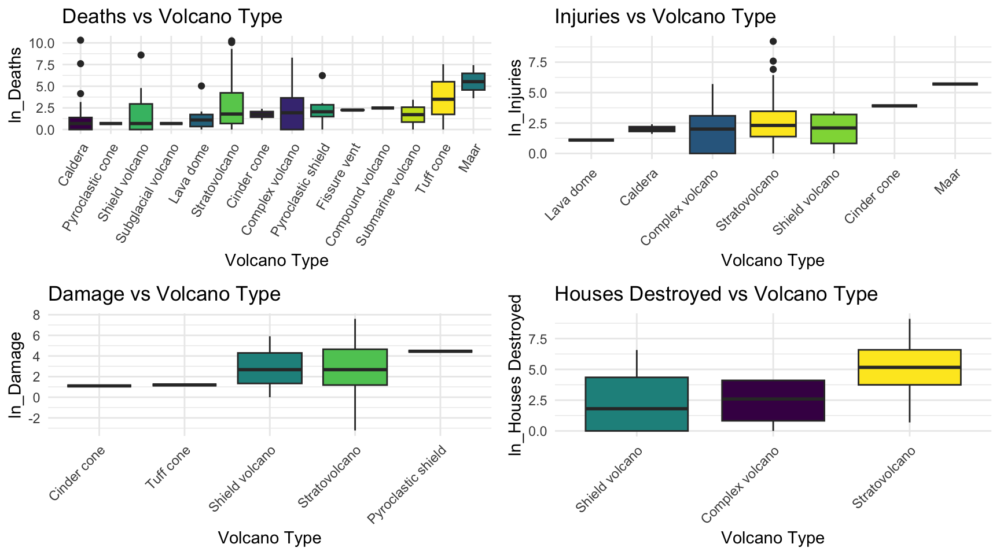
par(mfrow = c(2,2))
# volcano_injuries vs VEI
VEI_injuries =
numeric_df |>
filter(!is.na(volcano_injuries),
!is.na(volcanic_explosivity_index)) |>
ggplot(aes(x = volcanic_explosivity_index, y = log(volcano_injuries), group = volcanic_explosivity_index, fill = volcanic_explosivity_index)) +
geom_boxplot() +
labs(title = "Injuries vs VEI", x = "VEI (level)", y = "ln_Injuries")+
theme(legend.position = "none")
# volcano_deaths vs VEI
VEI_deaths =
numeric_df |>
filter(!is.na(volcano_deaths),
!is.na(volcanic_explosivity_index)) |>
ggplot(aes(x = volcanic_explosivity_index, y = log(volcano_deaths), group = volcanic_explosivity_index, fill = volcanic_explosivity_index)) +
geom_boxplot() +
labs(title = "Deaths vs VEI", x = "VEI (level)", y = "ln_Deaths")+
theme(legend.position = "none")
# damage vs VEI
VEI_damage =
numeric_df |>
filter(!is.na(volcano_damage_in_m),
!is.na(volcanic_explosivity_index)) |>
ggplot(aes(x = volcanic_explosivity_index, y = log(volcano_damage_in_m), group = volcanic_explosivity_index, fill = volcanic_explosivity_index)) +
geom_boxplot() +
labs(title = "Damage vs VEI", x = "VEI (level)", y = "ln_Damage") +
theme(legend.position = "none")
# volcano_houses_destroyed vs VEI
VEI_houses_destroyed =
numeric_df |>
filter(!is.na(volcano_houses_destroyed),
!is.na(volcanic_explosivity_index)) |>
ggplot(aes(x = volcanic_explosivity_index, y = log(volcano_houses_destroyed), group = volcanic_explosivity_index, fill = volcanic_explosivity_index)) +
geom_boxplot() +
labs(title = "Houses Destroyed vs VEI", x = "VEI (level)", y = "ln_Houses Destroyed") +
theme(legend.position = "none")
grid.arrange(VEI_injuries, VEI_deaths, VEI_damage, VEI_houses_destroyed, ncol = 2)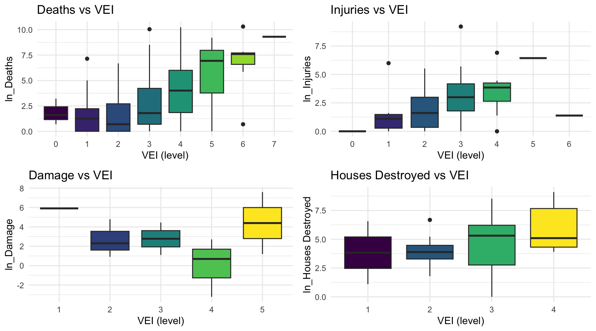
The above box plots show that with the increase in the volcanic explosivity index, there is a general upward trend in casualties and property damage caused by volcanic eruptions. In other words, as the energy of the volcanic eruption increases, the casualties and losses become more severe.
par(mfrow = c(2,2))
# volcano_injuries vs elevation
elevation_injuries =
numeric_df |>
filter(!is.na(volcano_injuries),
!is.na(elevation)) |>
ggplot(aes(x = elevation, y = log(volcano_injuries))) +
geom_point() +
geom_smooth(se = FALSE)+
labs(title = "Injuries VS Elevation", x = "Elevation", y = "ln_Injuries")+
theme(legend.position = "none")
# volcano_deaths vs elevation
elevation_deaths =
numeric_df |>
filter(!is.na(volcano_deaths),
!is.na(elevation)) |>
ggplot(aes(x = elevation, y = log(volcano_deaths))) +
geom_point() +
geom_smooth(se = FALSE)+
labs(title = "Deaths vs Elevation", x = "Elevation", y = "ln_Deaths")+
theme(legend.position = "none")
# damage vs elevation
elevation_damage =
numeric_df |>
filter(!is.na(volcano_damage_in_m),
!is.na(elevation)) |>
ggplot(aes(x = elevation, y = log(volcano_damage_in_m))) +
geom_point() +
geom_smooth(se = FALSE)+
labs(title = "Damage vs Elevation", x = "Elevation", y = "ln_Damage") +
theme(legend.position = "none")
# volcano_houses_destroyed vs elevation
elevation_houses_destroyed =
numeric_df |>
filter(!is.na(volcano_houses_destroyed),
!is.na(elevation)) |>
ggplot(aes(x = elevation, y = log(volcano_houses_destroyed))) +
geom_point() +
geom_smooth(se = FALSE)+
labs(title = "Houses Destroyed vs Elevation", x = "Elevation", y = "ln_Houses Destroyed") +
theme(legend.position = "none")
grid.arrange(elevation_injuries, elevation_deaths, elevation_damage, elevation_houses_destroyed, ncol = 2)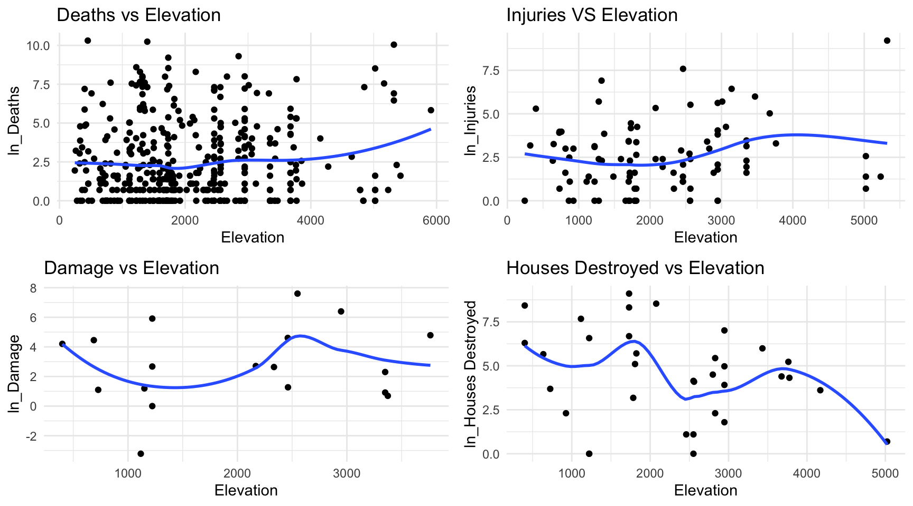
The above plots show that there is no obvious relationship between the elevation of the volcanoes and the casualties and property losses caused by the eruption.
Using bar charts, we can take a look at the severity levels of casualties and damages from volcanic eruptions with different factors involved.
Considering the problem with missing data and our interest of study, we will filter out the “None/No Record” values when examining loss levels and focus on the observations with losses recorded.
cad_df = tidy_df |>
select(year, flag_tsunami, flag_earthquake,
volcano_type, volcanic_explosivity_index,
volcano_deaths_description, volcano_injuries_description,
volcano_damage_description, volcano_houses_destroyed_description,
volcano_deaths, volcano_injuries,
volcano_damage_in_m, volcano_houses_destroyed,
elevation)p1 = cad_df|>
filter(volcano_deaths_description != "None/No Record") |>
ggplot(aes(x = flag_tsunami, fill = volcano_deaths_description)) +
geom_bar(stat = "count", position = "fill") +
geom_text(stat = "count",
aes(label = ..count..),
position = position_fill(vjust = 0.5)) +
labs(title = "Deaths",
x = "Tsunami",
y = "Proportion") +
theme(legend.position = "none")
p2 = cad_df|>
filter(volcano_injuries_description != "None/No Record") |>
ggplot(aes(x = flag_tsunami, fill = volcano_injuries_description)) +
geom_bar(stat = "count", position = "fill") +
geom_text(stat = "count",
aes(label = ..count..),
position = position_fill(vjust = 0.5)) +
labs(title = "Injuries",
x = "Tsunami",
y = "Proportion") +
theme(legend.position = "none")
p3 = cad_df|>
filter(volcano_damage_description != "None/No Record") |>
ggplot(aes(x = flag_tsunami, fill = volcano_damage_description)) +
geom_bar(stat = "count", position = "fill") +
geom_text(stat = "count",
aes(label = ..count..),
position = position_fill(vjust = 0.5)) +
labs(title = "Damages",
x = "Tsunami",
y = "Proportion") +
theme(legend.position = "none")
p4 = cad_df|>
filter(volcano_houses_destroyed_description != "None/No Record") |>
ggplot(aes(x = flag_tsunami, fill = volcano_houses_destroyed_description)) +
geom_bar(stat = "count", position = "fill") +
geom_text(stat = "count",
aes(label = ..count..),
position = position_fill(vjust = 0.5)) +
labs(title = "Houses Destroyed",
x = "Tsunami",
y = "Proportion") +
theme(legend.position = "none")legends_1 = get_legend(
p1 +
guides(fill = guide_legend(nrow = 1, title="Losses"), byrow=TRUE) +
theme(legend.position = "bottom") +
theme(legend.title=element_blank())
)
legends_2 = get_legend(
p3 +
guides(fill = guide_legend(nrow = 2, title="Damages"), byrow=TRUE) +
theme(legend.position = "bottom") +
theme(legend.title=element_blank())
)
mylegends = plot_grid(legends_1, legends_2, nrow = 2)
par(mfrow = c(2,2))
#grid.arrange(p1, p2, p3, p4, ncol = 2)
grid.arrange(
arrangeGrob(p1, p2, p3, p4, nrow = 1),
mylegends,
nrow = 2, heights=c(10, 3))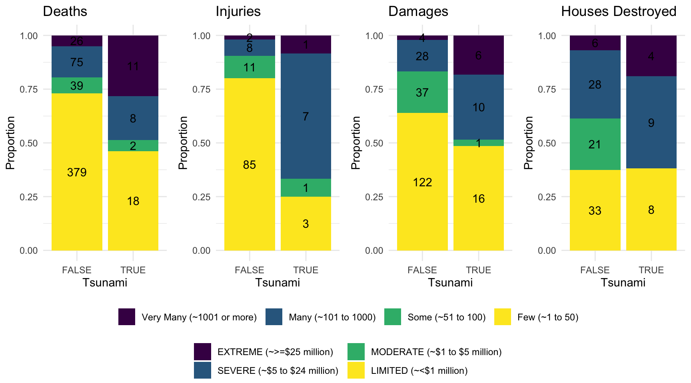
We can see that in general, for volcanic eruptions with casualties and damages, the occurrence of tsunami will increase the severity of the losses.
p1 = cad_df|>
filter(volcano_deaths_description != "None/No Record") |>
ggplot(aes(x = flag_earthquake, fill = volcano_deaths_description)) +
geom_bar(stat = "count", position = "fill") +
geom_text(stat = "count",
aes(label = ..count..),
position = position_fill(vjust = 0.5)) +
labs(title = "Deaths",
x = "Earthquake",
y = "Proportion") +
theme(legend.position = "none")
p2 = cad_df|>
filter(volcano_injuries_description != "None/No Record") |>
ggplot(aes(x = flag_earthquake, fill = volcano_injuries_description)) +
geom_bar(stat = "count", position = "fill") +
geom_text(stat = "count",
aes(label = ..count..),
position = position_fill(vjust = 0.5)) +
labs(title = "Injuries",
x = "Earthquake",
y = "Proportion") +
theme(legend.position = "none")
p3 = cad_df|>
filter(volcano_damage_description != "None/No Record") |>
ggplot(aes(x = flag_earthquake, fill = volcano_damage_description)) +
geom_bar(stat = "count", position = "fill") +
geom_text(stat = "count",
aes(label = ..count..),
position = position_fill(vjust = 0.5)) +
labs(title = "Damages",
x = "Earthquake",
y = "Proportion") +
theme(legend.position = "none")
p4 = cad_df|>
filter(volcano_houses_destroyed_description != "None/No Record") |>
ggplot(aes(x = flag_earthquake, fill = volcano_houses_destroyed_description)) +
geom_bar(stat = "count", position = "fill") +
geom_text(stat = "count",
aes(label = ..count..),
position = position_fill(vjust = 0.5)) +
labs(title = "Houses Destroyed",
x = "Earthquake",
y = "Proportion") +
theme(legend.position = "none")par(mfrow = c(2,2))
#grid.arrange(p1, p2, p3, p4, ncol = 2)
grid.arrange(
arrangeGrob(p1, p2, p3, p4, nrow = 1),
mylegends,
nrow = 2, heights=c(10, 3))We can see that in general, for volcanic eruptions with casualties and damages, the occurrence of earthquakes will increase the severity of the losses.
p1 = cad_df|>
filter(
volcano_deaths_description != "None/No Record",
!is.na(volcanic_explosivity_index)
) |>
ggplot(
aes(x = factor(volcanic_explosivity_index), fill = volcano_deaths_description)) +
geom_bar(stat = "count", position = "fill") +
geom_text(stat = "count",
aes(label = ..count..),
position = position_fill(vjust = 0.5)) +
labs(title = "Deaths",
x = "VEI",
y = "Proportion") +
theme(legend.position = "none")
p2 = cad_df|>
filter(
volcano_injuries_description != "None/No Record",
!is.na(volcanic_explosivity_index)
) |>
ggplot(
aes(x = factor(volcanic_explosivity_index), fill = volcano_injuries_description)) +
geom_bar(stat = "count", position = "fill") +
geom_text(stat = "count",
aes(label = ..count..),
position = position_fill(vjust = 0.5)) +
labs(title = "Injuries",
x = "VEI",
y = "Proportion") +
theme(legend.position = "none")
p3 = cad_df|>
filter(
volcano_damage_description != "None/No Record",
!is.na(volcanic_explosivity_index)
) |>
ggplot(
aes(x = factor(volcanic_explosivity_index), fill = volcano_damage_description)) +
geom_bar(stat = "count", position = "fill") +
geom_text(stat = "count",
aes(label = ..count..),
position = position_fill(vjust = 0.5)) +
labs(title = "Damages",
x = "VEI",
y = "Proportion") +
theme(legend.position = "none")
p4 = cad_df|>
filter(
volcano_houses_destroyed_description != "None/No Record",
!is.na(volcanic_explosivity_index)
) |>
ggplot(aes(
x = factor(volcanic_explosivity_index),
fill = volcano_houses_destroyed_description)) +
geom_bar(stat = "count", position = "fill") +
geom_text(stat = "count",
aes(label = ..count..),
position = position_fill(vjust = 0.5)) +
labs(title = "Houses Destroyed",
x = "VEI",
y = "Proportion") +
theme(legend.position = "none")par(mfrow = c(2,2))
grid.arrange(
arrangeGrob(p1, p2, p3, p4, nrow = 2),
mylegends,
nrow = 2, heights=c(10, 3))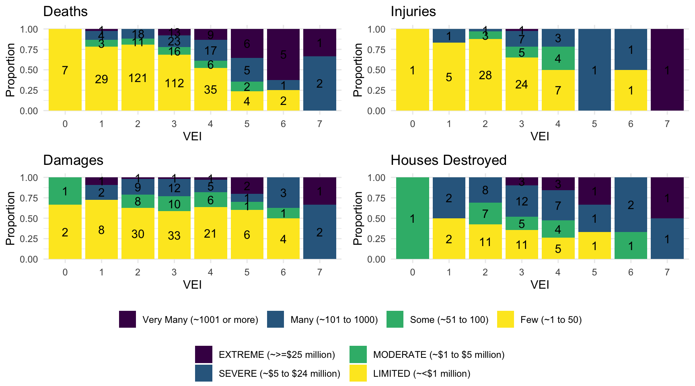
We can see that as VEI increases, the proportion of volcanic eruptions with more severe losses also increases, especially for casualty levels. This indicates that eruptions with a large VEI is likely to be more deadly.
elv_df = cad_df|>
filter(!is.na(elevation)) |>
mutate(
height = ifelse(elevation < 0, "< 0",
ifelse(elevation <= 1000, "0-1000",
ifelse(elevation <= 2000, "1000-2000",
ifelse(elevation <= 3000, "2000-3000",
ifelse(elevation <= 4000, "3000-4000",
ifelse(elevation <= 5000, "4000-5000", "> 5000")))))) ) |>
mutate(height = factor(height, levels = c("< 0", "0-1000", "1000-2000", "2000-3000", "3000-4000", "4000-5000", "> 5000")))
p1 = elv_df |>
filter(
volcano_deaths_description != "None/No Record",
) |>
ggplot(
aes(x = height, fill = volcano_deaths_description)) +
geom_histogram(stat = "count", position = "fill") +
geom_text(stat = "count",
aes(label = ..count..),
position = position_fill(vjust = 0.5)) +
labs(title = "Deaths",
x = "Elevation (m)",
y = "Proportion") +
theme(axis.text.x = element_text(angle = 30, hjust = 1)) +
theme(legend.position = "none")
p2 = elv_df |>
filter(
volcano_injuries_description != "None/No Record",
) |>
ggplot(
aes(x = height, fill = volcano_injuries_description)) +
geom_histogram(stat = "count", position = "fill") +
geom_text(stat = "count",
aes(label = ..count..),
position = position_fill(vjust = 0.5)) +
labs(title = "Injuries",
x = "Elevation (m)",
y = "Proportion") +
theme(axis.text.x = element_text(angle = 30, hjust = 1)) +
theme(legend.position = "none")
p3 = elv_df |>
filter(
volcano_damage_description != "None/No Record",
) |>
ggplot(
aes(x = height, fill = volcano_damage_description)) +
geom_histogram(stat = "count", position = "fill") +
geom_text(stat = "count",
aes(label = ..count..),
position = position_fill(vjust = 0.5)) +
labs(title = "Damages",
x = "Elevation (m)",
y = "Proportion") +
theme(axis.text.x = element_text(angle = 30, hjust = 1)) +
theme(legend.position = "none")
p4 = elv_df |>
filter(
volcano_houses_destroyed_description != "None/No Record",
) |>
ggplot(
aes(x = height, fill = volcano_houses_destroyed_description)) +
geom_histogram(stat = "count", position = "fill") +
geom_text(stat = "count",
aes(label = ..count..),
position = position_fill(vjust = 0.5)) +
labs(title = "Houses Destroyed",
x = "Elevation (m)",
y = "Proportion") +
theme(axis.text.x = element_text(angle = 30, hjust = 1)) +
theme(legend.position = "none")par(mfrow = c(2,2))
grid.arrange(
arrangeGrob(p1, p2, p3, p4, nrow = 2),
mylegends,
nrow = 2, heights=c(10, 3))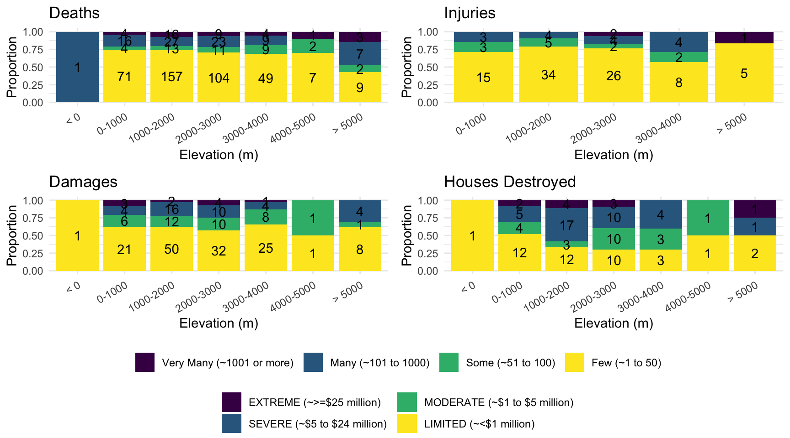
From the bar charts, there don’t seem to be a significant association between the severity of volcanic losses and the elevation of the volcano.
iceland_volcanic_data <- tidy_df %>%
filter(country == "Iceland")
ggplot(iceland_volcanic_data, aes(x = year, fill = as.factor(-year))) +
geom_histogram(bins = 30, color = "darkgray") +
theme_minimal() +
theme(legend.position = "none") +
labs(title = "Distribution of Volcanic Eruptions in Iceland Over Time",
x = "Year",
y = "Number of Eruptions")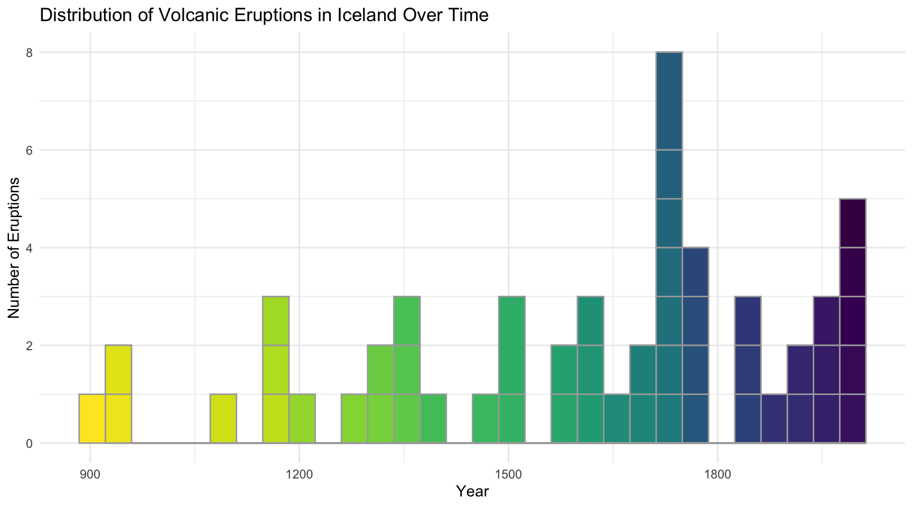
The above plot shows the number of volcanic eruptions in Iceland over several centuries. The data suggests an increase in recorded eruptions over time, particularly around the late 1700s. However the increasing trend in later years could be attributed to better documentation as well as an actual increase in volcanic activity.
iceland_volcanic_data %>%
count(volcano_type) %>%
arrange(desc(n)) %>%
mutate(volcano_type = factor(volcano_type, levels = volcano_type)) %>%
ggplot(aes(x = volcano_type, y = n, fill = volcano_type)) +
geom_col() +
theme_minimal() +
labs(title = "Prevalence of Different Volcano Types in Iceland",
x = "Volcano Type",
y = "Count") +
theme(axis.text.x = element_text(angle = 45, hjust = 1))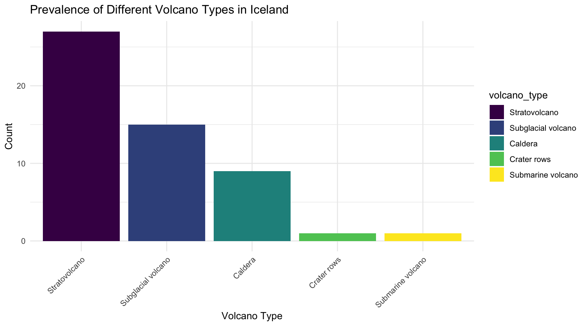
The above plot indicates that stratovolcanoes are the most prevalent volcano type in Iceland, suggesting varied and complex volcanic activity.
iceland_volcanic_data |>
mutate(VEI = factor(volcanic_explosivity_index, levels = 1:6)) |>
ggplot(aes(x = VEI, fill = fct_rev(VEI))) +
geom_bar() +
scale_fill_viridis_d(na.value = "gray")+
theme_minimal() +
labs(title = "Distribution of Volcanic Explosivity Index (VEI) in Iceland",
x = "VEI",
y = "Count")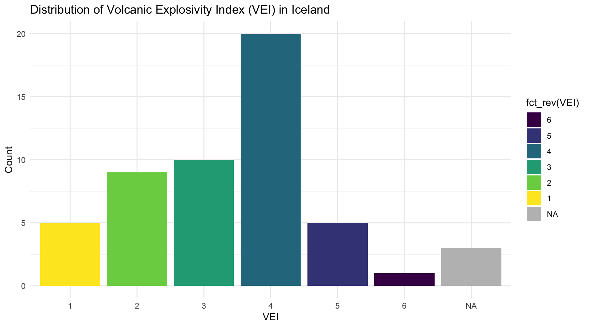
The above plot shows that eruptions with a Volcanic Explosivity Index of 3 and 4 are most common in Iceland, indicating moderate explosivity is typical for Icelandic eruptions.